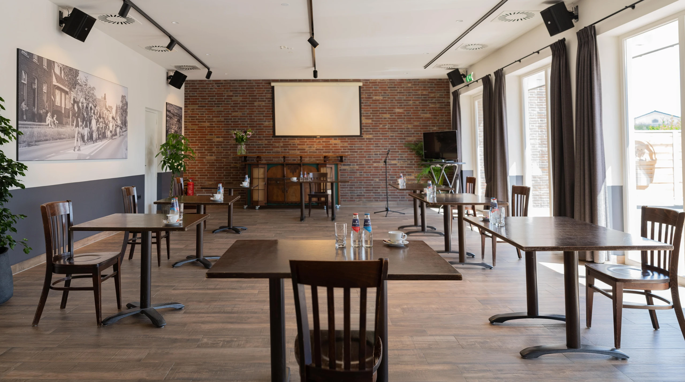

Vergaderen
Op zoek naar een locatie voor je zakelijke of verenigingsvergadering? Onze grote en kleine zaal zijn geschikt voor vergaderingen van 5 tot 80 personen. Beide zalen hebben moderne beamers voor heldere presentaties, en bij grote gezelschappen kun je een microfoon gebruiken.
Voor lunch en drankpakketten tijdens de vergadering zijn er tal van mogelijkheden, die we naar jouw behoefte invullen.